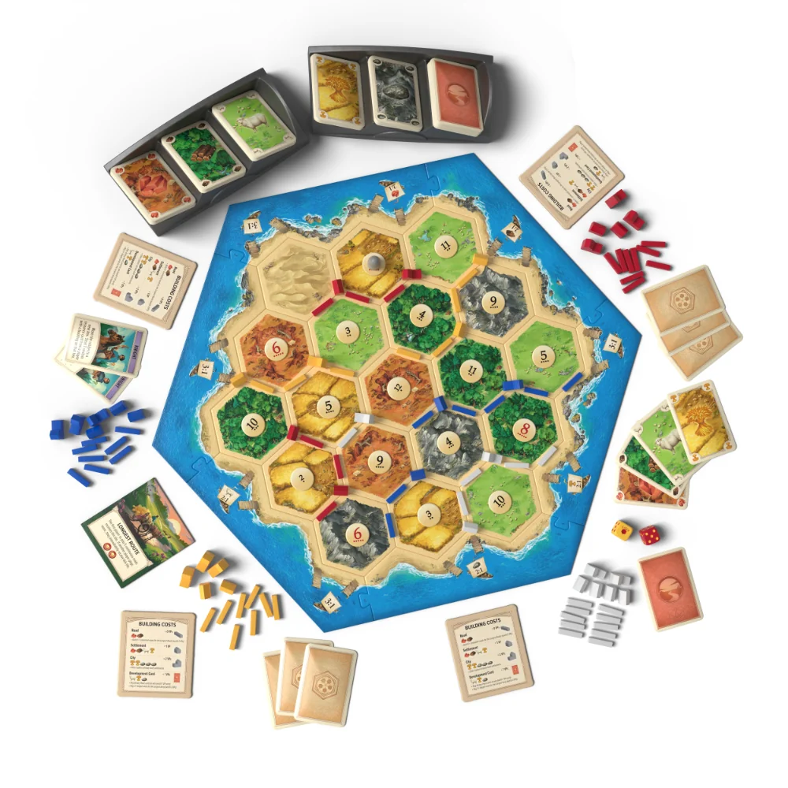
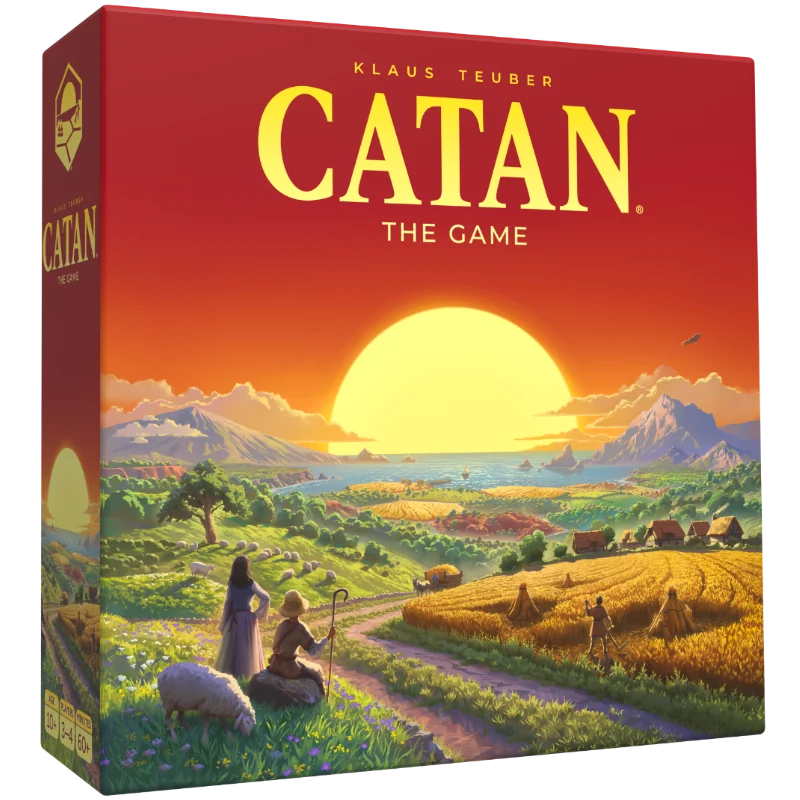
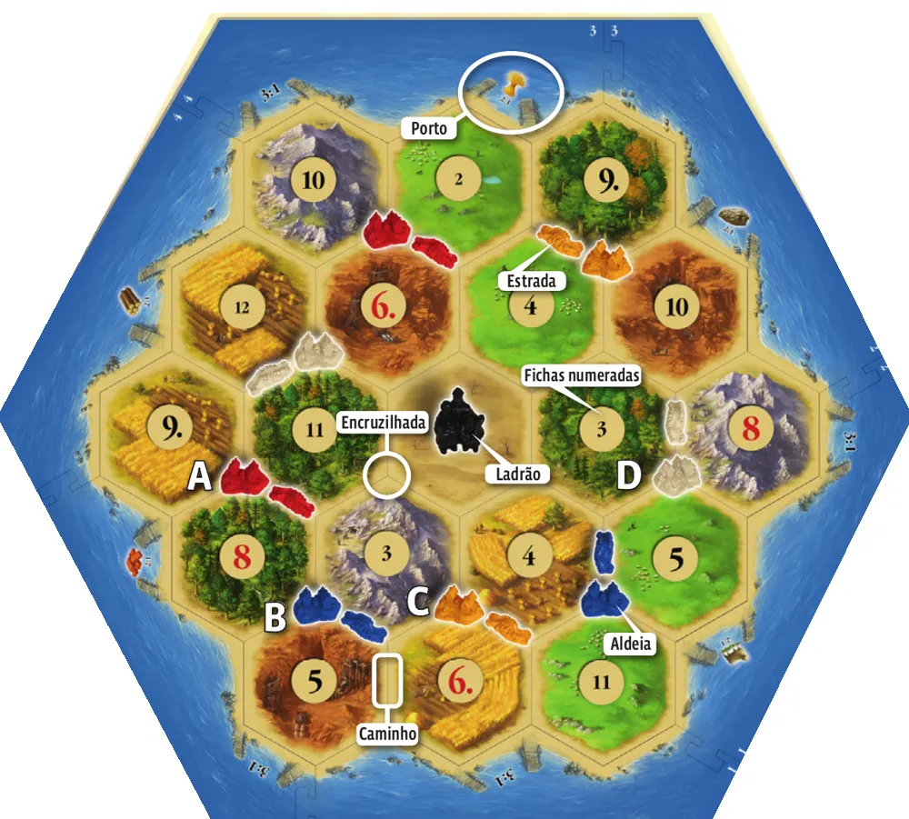
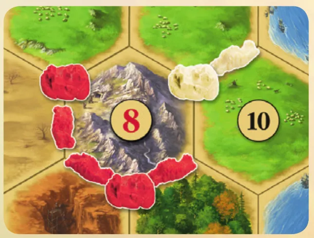
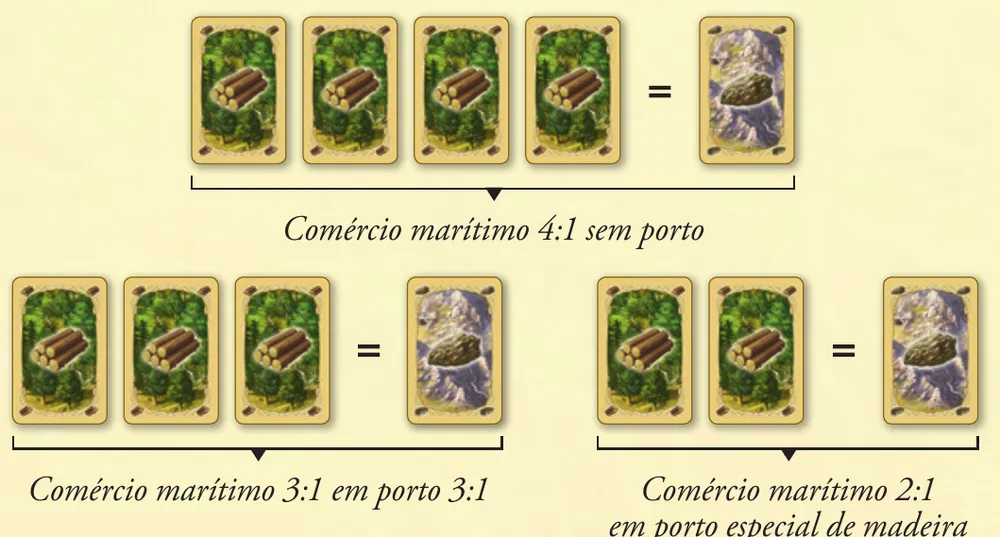
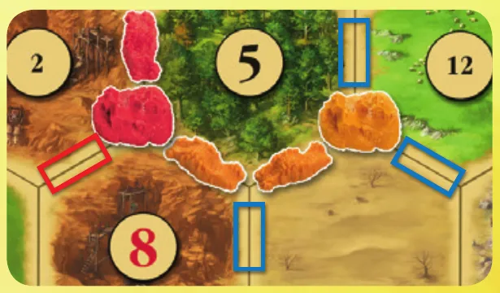
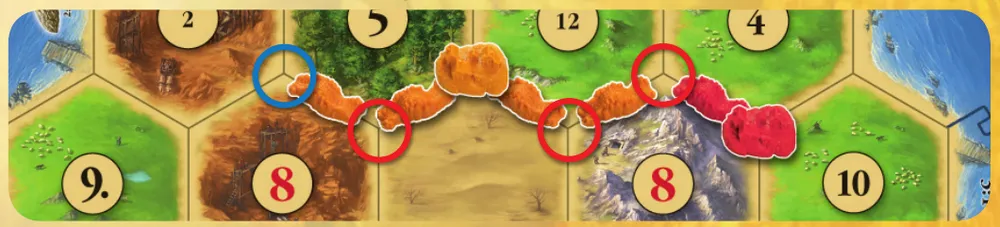
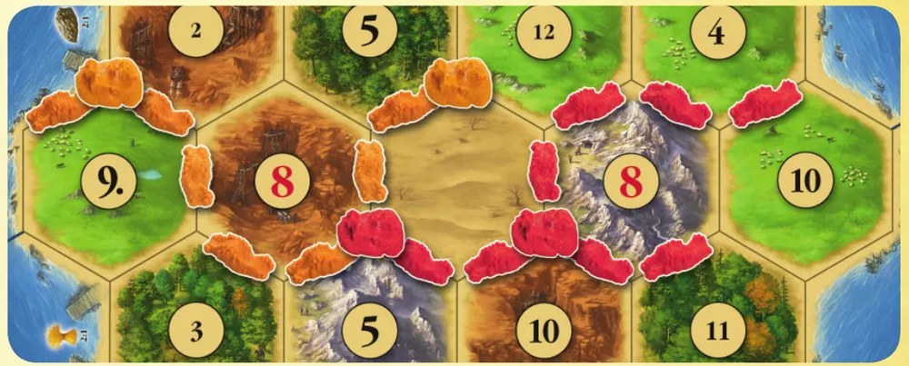

Imagem: Catan GmbH · edição internacional de 2025Troca e construção · Família
Como jogar Catan
Para quem nunca jogou3 a 4 jogadores75 min10+Edição Devir
· Redação Elite Boardgamers
Resumo em 1 minuto
Você produz matérias-primas com os dados, troca o que falta e constrói estradas, aldeias e cidades até chegar a 10 pontos de vitória no seu turno.
O dado de quem está na vez produz para todos: aldeia recebe 1 carta, cidade recebe 2.
Só o jogador da vez troca, com os outros ou com a reserva a 4 por 1, ou menos num porto.
No 7, quem tem mais de 7 cartas devolve metade e o ladrão bloqueia um terreno.
Como você aprende: 5 etapas, da mesa montada à contagem de pontosLeitura do essencial: cerca de 12 min
À vista, só o essencial para jogar. O que abre com + é explicação, exemplo, exercício ou regra de caso especial: abra quando precisar.
Comece a jogar em 4 minutos

Imagem: Catan GmbH · edição internacional de 2025
Meta: em 4 minutos de leitura, montar a ilha e jogar o seu primeiro turno sem abrir o manual.
A ideia do jogo
Você coloniza uma ilha. Cada terreno da ilha produz uma matéria-prima quando os dados mostram o número dele, e você só recebe se tiver construção encostada nele. Com matérias-primas você constrói mais, e cada construção vale pontos de vitória: quem chega a 10 no próprio turno vence. O que falta, você troca com os outros jogadores.
Monte a mesa
Na primeira partida, use a montagem para principiantes desenhada na p. 1 do manual p. 2.
Monte a moldura com as 6 peças de mar e encaixe os 19 terrenos exatamente como no desenho. Os portos já vêm impressos na moldura.
Ponha as fichas numeradas sobre os terrenos, como no desenho. O deserto fica sem ficha e com o ladrão em cima.
Cada jogador escolhe uma cor e pega 5 aldeias, 4 cidades, 15 estradas e uma tabela de custos de construção. Põe 2 aldeias e 2 estradas onde o desenho mostra a cor dele e deixa o resto à sua frente. Com 3 jogadores, ninguém usa o vermelho.
Separe as cartas de matéria-prima por tipo, viradas para cima, nos suportes de cartas: essa é a reserva. Embaralhe as cartas de desenvolvimento e deixe o monte virado para baixo (depois).
Deixe ao lado as cartas especiais Maior Estrada Comercial e Maior Exército de Cavalaria (depois) e os 2 dados.
Cada jogador recebe uma carta de matéria-prima de cada terreno vizinho da sua aldeia marcada com letra no desenho. As cartas ficam escondidas na mão.
Começa o jogador mais velho; a vez passa para a esquerda.
Seu primeiro turno
Terreno
Produz
Floresta
madeira
Colina
argila
Pasto
lã
Lavoura
cereais
Montanha
minério
Construção
Custo
Estrada
argila e madeira
Aldeia
argila, madeira, lã e cereais
Cidade
3 minérios e 2 cereais
Carta de desenvolvimento
minério, lã e cereais
Role os dois dados e some. Todo terreno com aquele número produz para todos os jogadores: 1 carta por aldeia encostada nele. Saiu 7: veja abaixo.
Troque, se quiser: com qualquer outro jogador, nos termos que combinarem, ou com a reserva, entregando 4 cartas iguais por 1 à sua escolha.
Construa, se puder pagar. Estrada vai num caminho (um lado de terreno) ligado a uma estrada ou construção sua (manual original, p. 4). Aldeia vai numa encruzilhada (onde os terrenos se encontram) ligada a uma estrada sua, sem nenhuma aldeia ou cidade nas três encruzilhadas vizinhas. Cartas pagas voltam para a reserva.
Passe os dados para a esquerda.
Se sair 7
Ninguém produz. Quem tem mais de 7 cartas na mão devolve metade à reserva, arredondando para baixo. Depois, quem rolou é obrigado a mudar o ladrão para outro terreno e pode tirar uma carta, sem ver, de um jogador com aldeia ou cidade encostada nele p. 4.
Ainda não precisa saber
Portos e trocas melhores: etapa 3. Cidades: etapa 3. O ladrão em detalhe e as cartas de desenvolvimento: etapa 4. Maior Estrada Comercial, Maior Exército de Cavalaria e o fim da partida: etapa 5.
Como a partida acaba
Aldeia vale 1 ponto, cidade 2, as duas cartas especiais 2 cada, e algumas cartas de desenvolvimento valem 1. Quem tiver 10 pontos ou mais durante o próprio turno vence na hora p. 4.
Prefere ver? Regras em vídeo; em caso de diferença, vale o manual.
Catan: O Jogo - Como Jogar, canal Romir Play House · abrir no YouTube
0Antes de tudo: o que é este jogoOpcional

Imagem: Catan GmbH · edição internacional de 2025Abrir esta seção
Catan se passa numa ilha de 19 terrenos cercada de mar. Cada um de 5 tipos de terreno produz uma matéria-prima: floresta dá madeira, colina dá argila, pasto dá lã, lavoura dá cereais e montanha dá minério. O deserto não produz nada p. 1. Você começa com 2 aldeias e 2 estradas na ilha e, portanto, com 2 pontos de vitória. O primeiro a chegar a 10 vence p. 1.
Cada terreno tem uma ficha numerada, e quando a soma dos dois dados dá aquele número, o terreno produz para quem tem aldeia ou cidade numa das suas pontas p. 1 e 2. O jogo é um ciclo: produzir, trocar, construir. Construir aumenta a produção e os pontos. Como ninguém consegue encostar aldeias em todos os terrenos, sempre falta alguma matéria-prima, e as trocas entre jogadores resolvem isso p. 1.
Duas coisas atrapalham. O 7 não produz nada, tira metade das cartas de quem acumulou muitas e põe o ladrão em ação. E todos disputam as mesmas encruzilhadas, porque uma aldeia impede outra ao lado.
1Como este guia ensinaOpcional
Imagem: Catan GmbH · edição internacional de 2025Abrir esta seção
São cinco etapas, cada uma uma parte real da partida e mais completa que a anterior: montar a ilha, produzir, trocar e construir, o 7 e as cartas de desenvolvimento, e a corrida aos 10 pontos. Em cada etapa, os blocos vêm nesta ordem:
Para entender: como aquela parte do jogo funciona e por quê.
Passo a passo: as regras exatas, na ordem em que você vai usá-las, com a página do manual.
Tarefas, com ajuda que vai diminuindo: um exemplo resolvido, uma tarefa para completar e uma tarefa sua vez, sem ajuda.
Treino rápido: exercícios curtos para o que precisa ficar automático.
Cada pergunta tem opções: escolha uma, e a resposta certa aparece com a explicação. No fim, situações especiais, uma avaliação curta e uma folha de consulta para a mesa.
2Etapa 1: montar a ilha
Por que funciona assim
Na caixa (manual do Catan Plus, p. 2 e 3): 19 terrenos (4 florestas, 4 pastos, 4 lavouras, 3 colinas, 3 montanhas, 1 deserto), 6 peças de moldura com 9 portos, 18 fichas numeradas, 95 cartas de matéria-prima (19 de cada), 25 cartas de desenvolvimento, 2 cartas especiais, peças em 4 cores, o ladrão, 2 dados e 2 suportes de cartas.

A montagem para principiantes: a ilha com o ladrão no deserto, os portos na moldura e as aldeias com letra de cada cor (A vermelho, B azul, C laranja, D branco). Ilustração: manual Devir p. 1Ver um exemplo resolvidoPratique esta etapa: exercícios com respostas
3Etapa 2: rolar os dados e produzir
Por que funciona assim

Saiu 8: o vermelho tem duas aldeias encostadas na montanha e recebe 2 minérios; o branco tem uma e recebe 1. Se saísse 10, o branco receberia 1 lã pelo pasto. Ilustração: manual Devir p. 2Ver um exemplo resolvidoPratique esta etapa: exercícios com respostas
4Etapa 3: trocar e construir
Por que funciona assim

Comércio Marítimo com madeira: 4 por 1 minério sem porto, 3 por 1 num porto 3:1 e 2 por 1 no porto especial de madeira. Ilustração: manual Devir p. 3

O laranja pode pôr a próxima estrada nos caminhos marcados em azul, que saem das suas estradas, mas não no caminho marcado em vermelho, depois da aldeia vermelha. Ilustração: manual Devir p. 3

Regra da distância: o laranja pode fundar uma aldeia na encruzilhada marcada em azul, mas não nas marcadas em vermelho, vizinhas de uma aldeia. Ilustração: manual Devir p. 3Ver um exemplo resolvidoPratique esta etapa: exercícios com respostas
5Etapa 4: o 7, o ladrão e as cartas de desenvolvimento
Imagem: Catan GmbH · edição internacional de 2025Por que funciona assimVer um exemplo resolvidoPratique esta etapa: exercícios com respostas
6Etapa 5: a corrida até os 10 pontos
Por que funciona assim

O vermelho tem 6 estradas seguidas (o ramo da bifurcação não conta) e fica com a Maior Estrada Comercial. As 7 estradas do laranja estão partidas pela aldeia vermelha em dois trechos, de 2 e de 5. Ilustração: manual Devir p. 3Sobre a ediçãoVer um exemplo resolvidoPratique esta etapa: exercícios com respostas
7Situações especiaisOpcional
Imagem: Catan GmbH · edição internacional de 2025Abrir esta seção
Montagem aleatória. Depois de um ou dois jogos, o manual sugere montar a ilha ao acaso p. 2. Os detalhes estão no Almanaque, não publicado em português; os passos vêm do manual original.
Sobre a edição
Faltam cartas na reserva. Se não houver cartas de uma matéria-prima para todos que produziram, ninguém a recebe nesse lançamento; se a falta atingir um jogador só, ele recebe o que houver. As outras matérias-primas saem normalmente (manual original, p. 4 e 10).
Quantas cartas você tem? Se perguntarem, você diz a verdade (manual original, p. 8).
Trocar e construir na mesma fase. Para jogadores experientes, o manual recomenda juntar as duas fases: depois dos dados, troque e construa em qualquer ordem, inclusive usando um porto no turno em que construiu a aldeia nele (manual original, p. 6). Combine com a mesa antes.
Dois, cinco ou seis jogadores. O jogo base é para 3 ou 4 (página do produto da Devir). Há uma variante oficial para duas pessoas no site da Devir, e 5 ou 6 pedem a expansão própria. Este guia não cobre esses modos.
Sobre a edição: Sobre a edição
8Avaliação finalOpcional
Imagem: Catan GmbH · edição internacional de 2025Abrir esta seção
Responda sem consultar. Cada resposta diz o que reler se você errar.
1. Bruno rola 6. Você tem uma cidade encostada numa colina com 6. O que recebe?
2 argilas. O lançamento vale para todos, e cidade recebe 2 p. 2. Errou: releia a etapa 2.
2. O ladrão está na sua floresta com 4. Sai 4. O que recebe?
Nada daquele terreno, enquanto o ladrão estiver lá p. 4. Errou: releia a etapa 2.
3. Você tem 4 argilas, 1 madeira, 1 lã e 1 cereais e um porto especial de argila. Consegue fazer uma estrada e uma aldeia sem ajuda de outro jogador?
Sim. No porto especial, 2 argilas valem 1 madeira. Fica com 2 argilas, 2 madeiras, 1 lã e 1 cereais: o custo exato da estrada e da aldeia p. 3. Errou: releia a etapa 3.
4. Você quer pôr uma aldeia numa encruzilhada vizinha de uma aldeia sua. Pode?
Não. A regra da distância vale também para as suas aldeias p. 3. Errou: releia a etapa 3.
5. Sai 7 e você tem 10 cartas. O que acontece com você?
Devolve 5, à sua escolha, e não recebe nada p. 4. Errou: releia a etapa 4.
6. No mesmo turno, você pode jogar um Cavaleiro e uma Construção de Estradas?
Não. Uma carta de desenvolvimento por turno (p. 4; manual original, p. 7). Errou: releia a etapa 4.
7. Você tem a Maior Estrada Comercial com 6 peças, e outro jogador faz uma de 6. Quem fica com a carta?
Você. Para tomar a carta, é preciso uma estrada maior; empate não basta p. 3. Errou: releia a etapa 5.
8. Você chega a 10 pontos no turno de outra pessoa. Venceu?
Ainda não. Só vence se tiver os 10 no seu turno (p. 4; manual original, p. 5). Errou: releia a etapa 5.
9Para consultar durante a partida
Imagem: Catan GmbH · edição internacional de 2025
Seu turno
Role os dois dados. O resultado produz para todos. Saiu 7: ladrão.
Comércio: com outros jogadores (só com você na troca) ou com a reserva (4:1, porto 3:1, porto especial 2:1).
Construção: quanto puder pagar.
A qualquer momento do turno, até antes dos dados: no máximo 1 carta de desenvolvimento, não comprada neste turno.
Passe os dados para a esquerda.
Custos
Construção
Custo
Vale
Estrada
argila e madeira
0 (conta para a Maior Estrada Comercial)
Aldeia
argila, madeira, lã e cereais
1 ponto
Cidade
3 minérios e 2 cereais, no lugar de uma aldeia
2 pontos
Carta de desenvolvimento
minério, lã e cereais
depende da carta
Produção: aldeia 1 carta, cidade 2, por terreno com o número sorteado. Terreno com ladrão não produz.
Regra da distância: nenhuma aldeia ou cidade, de ninguém, nas três encruzilhadas vizinhas. Aldeia nova precisa de estrada sua chegando.
Saiu 7: ninguém produz; mais de 7 cartas, devolva metade, arredondando para baixo; mova o ladrão para outro terreno; roube 1 carta, sem ver, de quem estiver encostado; siga para o comércio.
Cartas de desenvolvimento: Cavaleiro move o ladrão e fica à sua frente. Monopólio: todas as cartas de uma matéria-prima. Construção de Estradas: 2 estradas grátis. Invenção: 2 cartas da reserva. Ponto de Vitória: 1 ponto escondido.
Cartas especiais (2 pontos cada): Maior Estrada Comercial, a partir de 5 peças seguidas; Maior Exército de Cavalaria, a partir de 3 Cavaleiros jogados. Para tomar de alguém, é preciso ter mais, não o mesmo.
Fim: 10 pontos durante o seu próprio turno.
Limites: 5 aldeias, 4 cidades e 15 estradas por jogador.
10Fontes
Imagem: Catan GmbH · edição internacional de 2025
Devir. Catan, o jogo: Regras (folheto de 4 páginas, texto da edição 2015 da Kosmos, tradução de Rui Ferrão, 12/2018, arquivo 693602_Cat_Basis34_Manual_PT02.pdf). Botão "Baixar regras" do jogo base em http://www.catanbrasil.com.br/, site de Catan da Devir Brasil. Consultado em 31/10/2026.
Devir. Catan Plus: Manual de regras (12 páginas, 2020, arquivo 693152_CAT_BigBox19_Manual_PT03.pdf), no mesmo site. Usado só para a lista de componentes do jogo base p. 2 e 3. Consultado em 31/10/2026.
Catan GmbH e Catan Studio. Catan Game Rules & Almanac (5ª edição em inglês, 2020, 16 páginas). https://www.catan.com/understand-catan/game-rules. Usado para o que o folheto em português manda consultar no Almanaque. Consultado em 31/10/2026.
Devir Brasil. Página do produto Catan, o jogo (6ª edição), https://devir.com.br/catan-o-jogo-6a-edicao/ (jogadores, duração, idade e mudanças da 6ª edição). Consultado em 31/10/2026.
Não foram encontrados FAQ nem errata oficiais em português até 31/10/2026.
Regras conferidas nas Regras de Catan, o jogo, em português, que a Devir Brasil distribui no site oficial catanbrasil.com.br (tradução de Rui Ferrão, 12/2018, texto da edição 2015 da Kosmos). As páginas citadas são as desse folheto. O que ele manda procurar no Almanaque, que não está publicado em português, vem do manual original em inglês (Catan Studio, 2020) e está marcado como "manual original".